14. Esercizio pratico – Versione 6

Abbiamo appena implementato la seguente struttura a livelli:
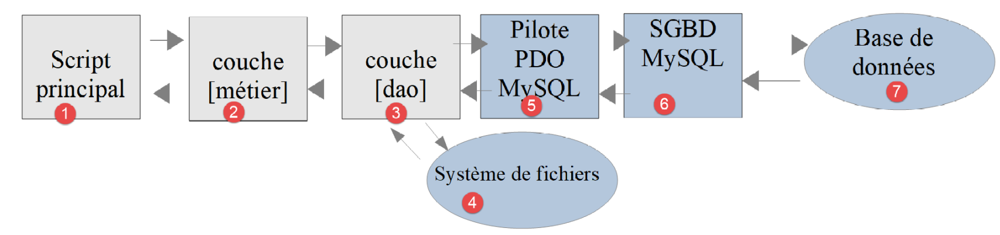
Il DBMS utilizzato negli esempi era MySQL. Nella sezione “link” abbiamo osservato che nulla nella classe che implementa il livello [dao] suggeriva l’utilizzo di un DBMS specifico. Verificheremo ora questo aspetto utilizzando un altro DBMS, PostgreSQL. L’architettura a livelli diventa la seguente:

14.1. Installazione del DBMS PostgreSQL
Le distribuzioni del DBMS PostgreSQL sono disponibili all'indirizzo [https://www.postgresql.org/download/] (maggio 2019). Qui illustriamo l'installazione della versione Windows a 64 bit:
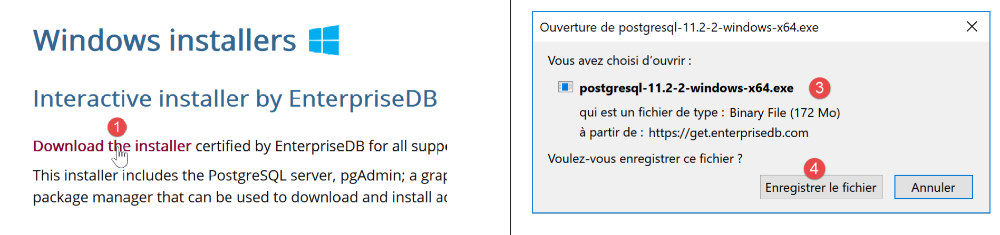

- In [1-4], scaricare il programma di installazione del DBMS;
Eseguire il programma di installazione scaricato:

- In [6], specificare una directory di installazione;

- in [8], l'opzione [Stack Builder] non è necessaria per ciò che stiamo facendo qui;
- in [10], lasciare il valore predefinito;

- Nei paragrafi [12-13] abbiamo inserito qui la password [root]. Questa sarà la password dell'amministratore del DBMS, il cui nome è [postgres]. PostgreSQL lo definisce anche "superutente";
- In [15], lasciare il valore predefinito: questa è la porta di ascolto del DBMS;

- in [17], lasciare il valore predefinito;
- In [19], il riepilogo della configurazione di installazione;


Su Windows, il DBMS PostgreSQL viene installato come servizio Windows che si avvia automaticamente. Nella maggior parte dei casi, ciò non è auspicabile. Modificheremo questa configurazione. Digitare [services] nella barra di ricerca di Windows [24-26]:

- in [29], puoi vedere che il servizio del DBMS PostgreSQL è impostato su automatico. Modificalo accedendo alle proprietà del servizio [30]:

- In [31-32], impostare il tipo di avvio su Manuale;
- in [33], arrestare il servizio;
Quando si desidera avviare il DBMS manualmente, tornare all'applicazione [servizi], fare clic con il tasto destro del mouse sul servizio [postgresql] (34) e avviarlo (35).
14.2. Abilitazione dell'estensione PDO per il DBMS PostgreSQL
Modificheremo il file [php.ini] che configura PHP (vedi sezione collegata):

- In [2], verifica che l'estensione PDO di PostgreSQL sia abilitata. Una volta fatto, salva la modifica e riavvia Laragon per assicurarti che la modifica abbia effetto. Quindi verifica la configurazione di PHP direttamente da Laragon [3-5].
14.3. Amministrazione di PostgreSQL con lo strumento [pgAdmin]
Avvia il servizio Windows del DBMS PostgreSQL (vedi la sezione collegata). Quindi, proprio come hai avviato lo strumento [services], avvia lo strumento [pgadmin], che ti permette di amministrare il DBMS PostgreSQL [1-3]:
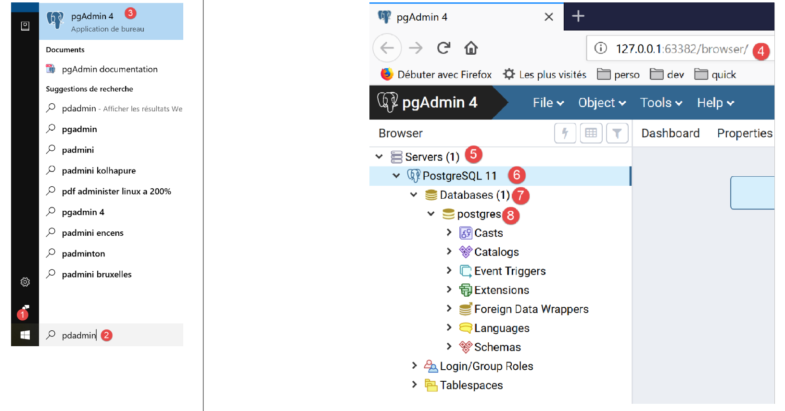
A un certo punto potrebbe essere richiesta la password del superutente. Il superutente si chiama [postgres]. Questa password viene impostata durante l'installazione del DBMS. In questo documento, durante l'installazione abbiamo assegnato la password [root] al superutente.
- In [4], [pgAdmin] è un'applicazione web;
- in [5], l'elenco dei server PostgreSQL rilevati da [pgAdmin], qui 1;
- in [6], il server PostgreSQL che abbiamo avviato;
- in [7], i database del DBMS, qui 1;
- in [8], il database [postgresql] è gestito dal superutente [postgres];
Per prima cosa, creiamo un utente [admimpots] con la password [mdpimpots]:
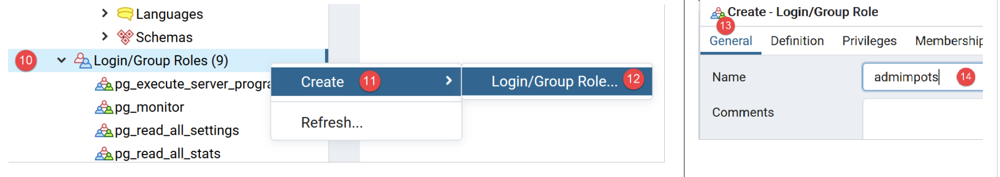
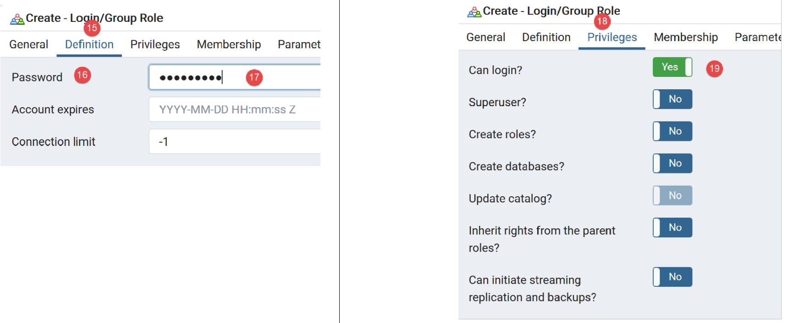
- in [17], abbiamo inserito [mdpimpots];

- in [21], il codice SQL che lo strumento [pgAdmin] invierà al DBMS PostgreSQL. Questo è un modo per imparare il linguaggio SQL proprietario di PostgreSQL;
- In [22], dopo aver confermato con la procedura guidata [Salva], l'utente [admimpots] è stato creato;
Ora creiamo il database [dbimpots-2019]:

Fare clic con il tasto destro del mouse su [23], quindi su [24-25] per creare un nuovo database. Nella scheda [26], definire il nome del database [27] e il suo proprietario [admimpots] [28].

- In [30], il codice SQL per la creazione del database;
- In [31], dopo aver confermato con la procedura guidata [Salva], viene creato il database [dbimpots-2019];
Ora creeremo la tabella [tbtranches] con le colonne [id, limites, coeffr, coeffn]. Una caratteristica distintiva di PostgreSQL è che i nomi delle colonne distinguono tra maiuscole e minuscole, cosa che di solito non avviene con altri DBMS. Pertanto, con MySQL, l'istruzione SQL [select limites, coeffR, coeffN from tbtranches] funzionerà anche se le colonne effettive nella tabella [tbtranches] sono [LIMITES, COEFFR, COEFFN]. Con PostgreSQL, questa istruzione SQL non funzionerà. Si potrebbe quindi scrivere [select LIMITES, COEFFR, COEFFN from tbtranches], ma non funzionerebbe comunque, perché PostgreSQL eseguirebbe la query [select limites, coeffr, coeffn from tbtranches]: per impostazione predefinita, converte i nomi delle colonne in minuscolo. Per evitare ciò, è necessario scrivere: [select "LIMITES", "COEFFR", "COEFFN" from tbtranches], ovvero è necessario racchiudere i nomi delle colonne tra virgolette. Per questi motivi, assegneremo alle colonne nomi in minuscolo. I nomi degli oggetti del database possono essere fonte di incompatibilità tra i DBMS, poiché alcuni nomi sono parole riservate in alcuni DBMS ma non in altri.
Creiamo la tabella [tbtranches]:

- utilizzare il pulsante [40] per creare le colonne;

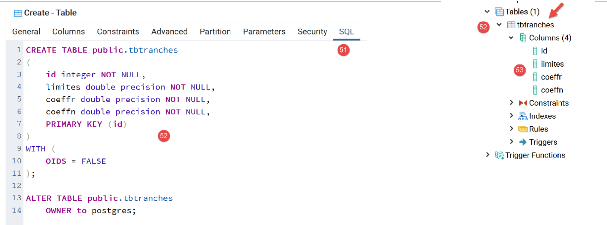
- dopo aver completato la procedura guidata di creazione facendo clic su [Salva], viene creata la tabella [tbtranches] [52-53];
Dobbiamo indicare al DBMS di generare autonomamente la chiave primaria [id] quando si inserisce una riga nella tabella:

- in [56] accediamo alle proprietà della chiave primaria [id];
- in [59], specifichiamo che la colonna è di tipo [Identity]. Questo farà sì che il DBMS generi i valori della chiave primaria;

- in [62], il codice SQL generato per questa operazione;
La tabella [tbtranches] è ora pronta.
Ripetiamo gli stessi passaggi per creare la tabella [tbconstantes]. Ecco il risultato atteso:


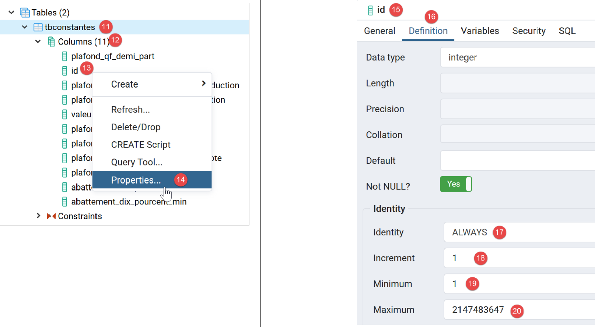
Il database [dbimpots-2019] è ora pronto. Lo popoleremo con i dati.
Come abbiamo fatto con MySQL, è possibile esportare il database [dbimpots-2019] in un file SQL. Potremo quindi importare questo file SQL per ricreare il database in caso di perdita o danneggiamento. In questo caso, esporteremo solo la struttura del database e non i suoi dati:


Il file generato è il seguente:
--
-- PostgreSQL database dump
--
-- Dumped from database version 11.2
-- Dumped by pg_dump version 11.2
-- Started on 2019-07-04 08:20:31
SET statement_timeout = 0;
SET lock_timeout = 0;
SET idle_in_transaction_session_timeout = 0;
SET client_encoding = 'UTF8';
SET standard_conforming_strings = on;
SELECT pg_catalog.set_config('search_path', '', false);
SET check_function_bodies = false;
SET client_min_messages = warning;
SET row_security = off;
SET default_tablespace = '';
SET default_with_oids = false;
--
-- TOC entry 198 (class 1259 OID 16408)
-- Name: tbconstantes; Type: TABLE; Schema: public; Owner: postgres
--
CREATE TABLE public.tbconstantes (
plafond_qf_demi_part double precision NOT NULL,
id integer NOT NULL,
plafond_revenus_celibataire_pour_reduction double precision NOT NULL,
plafond_revenus_couple_pour_reduction double precision NOT NULL,
valeur_reduc_demi_part double precision NOT NULL,
plafond_decote_celibataire double precision NOT NULL,
plafond_decote_couple double precision NOT NULL,
plafond_impot_celibataire_pour_decote double precision NOT NULL,
plafond_impot_couple_pour_decote double precision NOT NULL,
abattement_dix_pourcent_max double precision NOT NULL,
abattement_dix_pourcent_min double precision NOT NULL
);
ALTER TABLE public.tbconstantes OWNER TO postgres;
--
-- TOC entry 199 (class 1259 OID 16411)
-- Name: tbconstantes_id_seq; Type: SEQUENCE; Schema: public; Owner: postgres
--
ALTER TABLE public.tbconstantes ALTER COLUMN id ADD GENERATED ALWAYS AS IDENTITY (
SEQUENCE NAME public.tbconstantes_id_seq
START WITH 1
INCREMENT BY 1
NO MINVALUE
NO MAXVALUE
CACHE 1
);
--
-- TOC entry 196 (class 1259 OID 16399)
-- Name: tbtranches; Type: TABLE; Schema: public; Owner: admimpots
--
CREATE TABLE public.tbtranches (
limites double precision NOT NULL,
id integer NOT NULL,
coeffr double precision NOT NULL,
coeffn double precision NOT NULL
);
ALTER TABLE public.tbtranches OWNER TO admimpots;
--
-- TOC entry 197 (class 1259 OID 16404)
-- Name: tbimpots_id_seq; Type: SEQUENCE; Schema: public; Owner: admimpots
--
ALTER TABLE public.tbtranches ALTER COLUMN id ADD GENERATED ALWAYS AS IDENTITY (
SEQUENCE NAME public.tbimpots_id_seq
START WITH 1
INCREMENT BY 1
NO MINVALUE
NO MAXVALUE
CACHE 1
);
--
-- TOC entry 2694 (class 2606 OID 16429)
-- Name: tbconstantes tbconstantes_pkey; Type: CONSTRAINT; Schema: public; Owner: postgres
--
ALTER TABLE ONLY public.tbconstantes
ADD CONSTRAINT tbconstantes_pkey PRIMARY KEY (id);
--
-- TOC entry 2692 (class 2606 OID 16403)
-- Name: tbtranches tbimpots_pkey; Type: CONSTRAINT; Schema: public; Owner: admimpots
--
ALTER TABLE ONLY public.tbtranches
ADD CONSTRAINT tbimpots_pkey PRIMARY KEY (id);
--
-- TOC entry 2821 (class 0 OID 0)
-- Dependencies: 198
-- Name: TABLE tbconstantes; Type: ACL; Schema: public; Owner: postgres
--
GRANT ALL ON TABLE public.tbconstantes TO admimpots;
-- Completed on 2019-07-04 08:20:32
--
-- PostgreSQL database dump complete
--
14.4. Compilazione della tabella [tbtranches]
Lo abbiamo già fatto con il DBMS MySQL nella sezione collegata. Dobbiamo semplicemente modificare il file [database.json] che descrive il database:

Il file [database.json] diventa il seguente:
{
"dsn": "pgsql:host=localhost;dbname=dbimpots-2019",
"id": "admimpots",
"pwd": "mdpimpots",
"tableTranches": "public.tbtranches",
"colLimites": "limites",
"colCoeffR": "coeffr",
"colCoeffN": "coeffn",
"tableConstantes": "public.tbconstantes",
"colPlafondQfDemiPart": "plafond_qf_demi_part",
"colPlafondRevenusCelibatairePourReduction": "plafond_revenus_celibataire_pour_reduction",
"colPlafondRevenusCouplePourReduction": "plafond_revenus_couple_pour_reduction",
"colValeurReducDemiPart": "valeur_reduc_demi_part",
"colPlafondDecoteCelibataire": "plafond_decote_celibataire",
"colPlafondDecoteCouple": "plafond_decote_couple",
"colPlafondImpotCelibatairePourDecote": "plafond_impot_celibataire_pour_decote",
"colPlafondImpotCouplePourDecote": "plafond_impot_couple_pour_decote",
"colAbattementDixPourcentMax": "abattement_dix_pourcent_max",
"colAbattementDixPourcentMin": "abattement_dix_pourcent_min"
}
- riga 2: il DSN è cambiato; [pgsql] indica che si tratta del DBMS Postgres;
- righe 5 e 9: ai nomi delle tabelle è stato anteposto il nome dello schema a cui appartengono [public]. Ciò non era strettamente necessario poiché [public] è lo schema predefinito quando non viene specificato alcuno schema nel nome della tabella;
- righe 6–8, 10–19: i nomi delle colonne sono cambiati;
Lo script [MainTransferAdminDataFromJsonFile2PostgresDatabase.php] per il popolamento del database [dbimpots-2019] è il seguente:
<?php
// strict adherence to declared types of function parameters
declare (strict_types=1);
// namespace
namespace Application;
// error handling by PHP
// ini_set("display_errors", "0");
// interface and class inclusion
require_once __DIR__ . "/../../version-05/Entities/BaseEntity.php";
require_once __DIR__ . "/../../version-05/Entities/TaxAdminData.php";
require_once __DIR__ . "/../../version-05/Entities/TaxPayerData.php";
require_once __DIR__ . "/../../version-05/Entities/Database.php";
require_once __DIR__ . "/../../version-05/Entities/ExceptionImpots.php";
require_once __DIR__ . "/../../version-05/Utilities/Utilitaires.php";
require_once __DIR__ . "/../../version-05/Dao/InterfaceDao.php";
require_once __DIR__ . "/../../version-05/Dao/TraitDao.php";
require_once __DIR__ . "/../../version-05/Dao/InterfaceDao4TransferAdminData2Database.php";
require_once __DIR__ . "/../../version-05/Dao/DaoTransferAdminDataFromJsonFile2Database.php";
//
// definition of constants
const DATABASE_CONFIG_FILENAME = "../Data/database.json";
const TAXADMINDATA_FILENAME = "../Data/taxadmindata.json";
//
try {
// creation of the [dao] layer
$dao = new DaoTransferAdminDataFromJsonFile2Database(DATABASE_CONFIG_FILENAME, TAXADMINDATA_FILENAME);
// data transfer to the database
$dao->transferAdminData2Database();
} catch (ExceptionImpots $ex) {
// error is displayed
print "L'erreur suivante s'est produite : " . utf8_encode($ex->getMessage()) . "\n";
}
// end
print "Terminé\n";
exit;
Commenti
Cambiano solo le righe 12–21, che caricano i file necessari per l'esecuzione dell'applicazione. Cambiano perché cambia il valore di [__DIR__]: ora punta alla cartella [version-07/Main].
Quando si esegue questo script, si ottiene il seguente risultato nella tabella [tbtranches]:
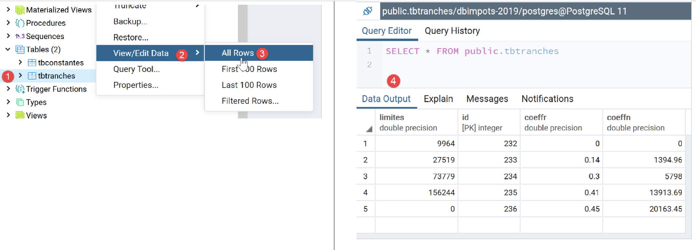
- Fare clic con il tasto destro del mouse su [1], quindi su [2-3];
- nel [4] sono riportati i dati relativi alle fasce di imposta;
Ripetiamo lo stesso procedimento per la tabella delle costanti [tbconstantes]:
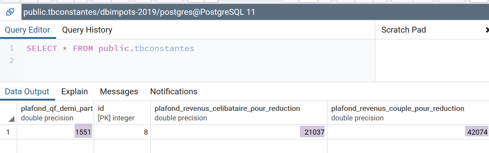
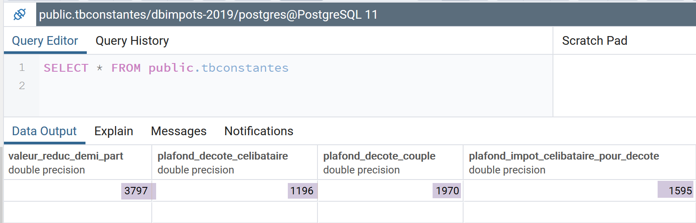
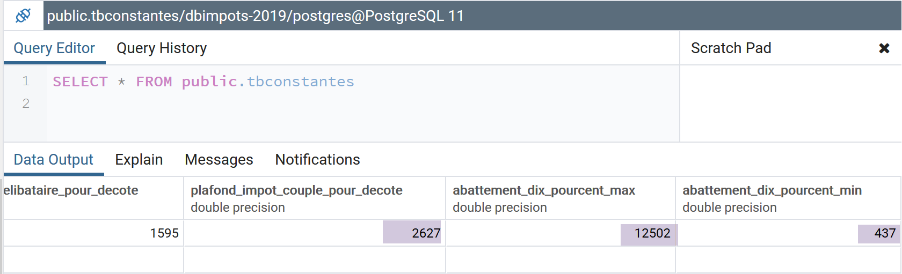
Si noti che per eseguire lo script non è necessario che l'applicazione Laragon sia attiva: non sono richiesti né il server Apache né il DBMS MySQL. Abbiamo bisogno solo del DBMS PostgreSQL, per il quale abbiamo avviato il servizio Windows.
14.5. Calcolo delle imposte

I livelli [dao] (3) e [business] (2) sono già stati scritti. Abbiamo già scritto lo script principale per il DBMS MySQL nella sezione collegata. Dobbiamo semplicemente prendere lo script [MainCalculateImpotsWithTaxAdminDataInMySQLDatabase.php] e adattarlo al DBMS PostgreSQL. Ora si chiama [MainCalculateImpotsWithTaxAdminDataInPostgresDatabase.php]:
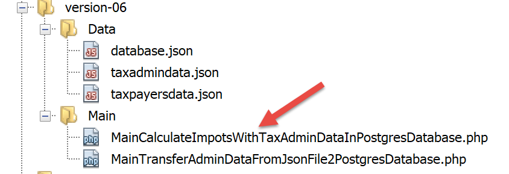
Lo script [MainCalculateImpotsWithTaxAdminDataInPostgresDatabase.php] è il seguente:
<?php
// strict adherence to declared types of function parameters
declare (strict_types=1);
// namespace
namespace Application;
// error handling by PHP
//ini_set("display_errors", "0");
// interface and class inclusion
require_once __DIR__ . "/../../version-05/Entities/BaseEntity.php";
require_once __DIR__ . "/../../version-05/Entities/TaxAdminData.php";
require_once __DIR__ . "/../../version-05/Entities/TaxPayerData.php";
require_once __DIR__ . "/../../version-05/Entities/Database.php";
require_once __DIR__ . "/../../version-05/Entities/ExceptionImpots.php";
require_once __DIR__ . "/../../version-05/Utilities/Utilitaires.php";
require_once __DIR__ . "/../../version-05/Dao/InterfaceDao.php";
require_once __DIR__ . "/../../version-05/Dao/TraitDao.php";
require_once __DIR__ . "/../../version-05/Dao/DaoImpotsWithTaxAdminDataInDatabase.php";
require_once __DIR__ . "/../../version-05/Métier/InterfaceMetier.php";
require_once __DIR__ . "/../../version-05/Métier/Metier.php";
//
// definition of constants
const DATABASE_CONFIG_FILENAME = "../Data/database.json";
const TAXADMINDATA_FILENAME = "../Data/taxadmindata.json";
const RESULTS_FILENAME = "../Data/resultats.json";
const ERRORS_FILENAME = "../Data/errors.json";
const TAXPAYERSDATA_FILENAME = "../Data/taxpayersdata.json";
try {
// creation of the [dao] layer
$dao = new DaoImpotsWithTaxAdminDataInDatabase(DATABASE_CONFIG_FILENAME);
// creation of the [business] layer
$métier = new Metier($dao);
// tax calculation in batch mode
$métier->executeBatchImpots(TAXPAYERSDATA_FILENAME, RESULTS_FILENAME, ERRORS_FILENAME);
} catch (ExceptionImpots $ex) {
// error is displayed
print "Une erreur s'est produite : " . utf8_encode($ex->getMessage()) . "\n";
}
// end
print "Terminé\n";
exit;
Commenti
Cambiano solo le righe 12–22, che caricano i file necessari per l'esecuzione dell'applicazione. Cambiano perché cambia il valore di [__DIR__]: ora punta alla cartella [version-07/Main].
Risultati dell'esecuzione
Gli stessi ottenuti nelle versioni precedenti.
14.6. Test [Codeception]
Come per le versioni precedenti, convalidiamo questa versione con i test [Codeception]:
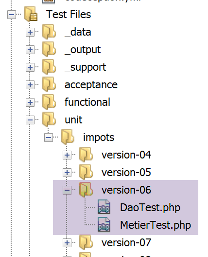
14.6.1. Test del livello [DAO]
Il test [DaoTest.php] è il seguente:
<?php
// strict adherence to declared types of function parameters
declare (strict_types=1);
// namespace
namespace Application;
// root directories
define("ROOT", "C:/Data/st-2019/dev/php7/poly/scripts-console/impots/version-06");
define("VENDOR", "C:/myprograms/laragon-lite/www/vendor");
// interface and class inclusion
require_once ROOT . "/../version-05/Entities/BaseEntity.php";
require_once ROOT . "/../version-05/Entities/TaxAdminData.php";
require_once ROOT . "/../version-05/Entities/TaxPayerData.php";
require_once ROOT . "/../version-05/Entities/Database.php";
require_once ROOT . "/../version-05/Entities/ExceptionImpots.php";
require_once ROOT . "/../version-05/Utilities/Utilitaires.php";
require_once ROOT . "/../version-05/Dao/InterfaceDao.php";
require_once ROOT . "/../version-05/Dao/TraitDao.php";
require_once ROOT . "/../version-05/Dao/DaoImpotsWithTaxAdminDataInDatabase.php";
// third-party libraries
require_once VENDOR . "/autoload.php";
// definition of constants
const DATABASE_CONFIG_FILENAME = ROOT ."../Data/database.json";
class DaoTest extends \Codeception\Test\Unit {
// TaxAdminData
private $taxAdminData;
public function __construct() {
parent::__construct();
// creation of the [dao] layer
$dao = new DaoImpotsWithTaxAdminDataInDatabase(DATABASE_CONFIG_FILENAME);
$this->taxAdminData = $dao->getTaxAdminData();
}
// tests
public function testTaxAdminData() {
…
}
}
Commenti
- righe 9–28: definizione dell'ambiente di test. Utilizziamo lo stesso ambiente, senza il livello [business], di quello impiegato dallo script principale [MainCalculateImpotsWithTaxAdminDataInPostgresDatabase] descritto nella sezione collegata;
- righe 34–39: costruzione del livello [dao];
- riga 38: l'attributo [$this→taxAdminData] contiene i dati da testare;
- righe 42–44: il metodo [testTaxAdminData] è quello descritto nella sezione collegata;
I risultati del test sono i seguenti:

14.6.2. Test del livello [business]
Il test [MetierTest.php] è il seguente:
<?php
// strict adherence to declared types of function parameters
declare (strict_types=1);
// namespace
namespace Application;
// root directories
define("ROOT", "C:/Data/st-2019/dev/php7/poly/scripts-console/impots/version-06");
define("VENDOR", "C:/myprograms/laragon-lite/www/vendor");
// interface and class inclusion
require_once ROOT . "/../version-05/Entities/BaseEntity.php";
require_once ROOT . "/../version-05/Entities/TaxAdminData.php";
require_once ROOT . "/../version-05/Entities/TaxPayerData.php";
require_once ROOT . "/../version-05/Entities/Database.php";
require_once ROOT . "/../version-05/Entities/ExceptionImpots.php";
require_once ROOT . "/../version-05/Utilities/Utilitaires.php";
require_once ROOT . "/../version-05/Dao/InterfaceDao.php";
require_once ROOT . "/../version-05/Dao/TraitDao.php";
require_once ROOT . "/../version-05/Dao/DaoImpotsWithTaxAdminDataInDatabase.php";
require_once ROOT . "/../version-05/Métier/InterfaceMetier.php";
require_once ROOT . "/../version-05/Métier/Metier.php";
// third-party libraries
require_once VENDOR . "/autoload.php";
// definition of constants
const DATABASE_CONFIG_FILENAME = ROOT . "../Data/database.json";
class MetierTest extends \Codeception\Test\Unit {
// business layer
private $métier;
public function __construct() {
parent::__construct();
// creation of the [dao] layer
$dao = new DaoImpotsWithTaxAdminDataInDatabase(DATABASE_CONFIG_FILENAME);
// creation of the [business] layer
$this->métier = new Metier($dao);
}
// tests
public function test1() {
…
}
--------------------------------------------------------------------
public function test11() {
…
}
}
Commenti
- righe 9–28: definizione dell'ambiente di test. Utilizziamo lo stesso dello script principale [MainCalculateImpotsWithTaxAdminDataInPostgresDatabase] descritto nella sezione collegata;
- righe 34–40: costruzione dei livelli [dao] e [business];
- riga 39: l'attributo [$this→business] fa riferimento al livello [business]
- righe 43–49: i metodi [test1, test2…, test11] sono quelli descritti nella sezione collegata;
I risultati del test sono i seguenti:
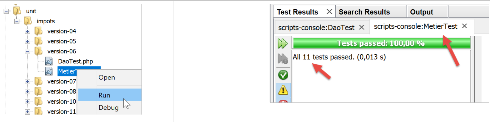